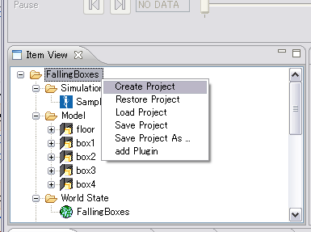
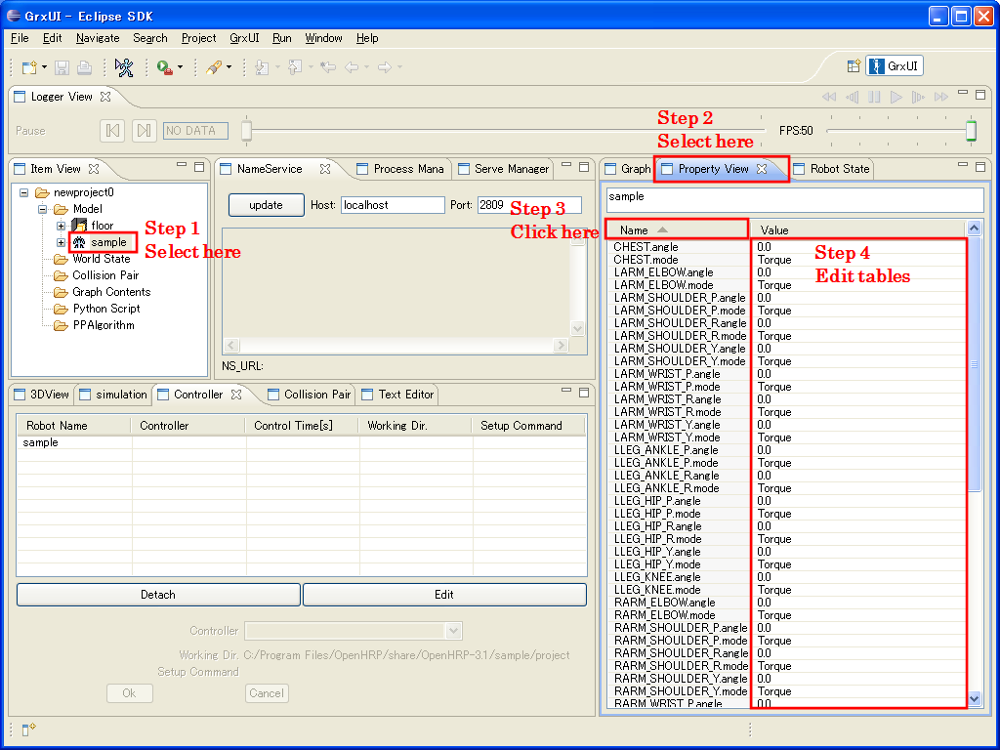
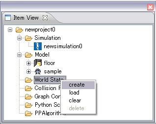
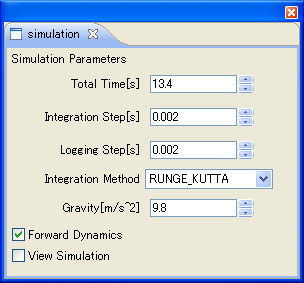
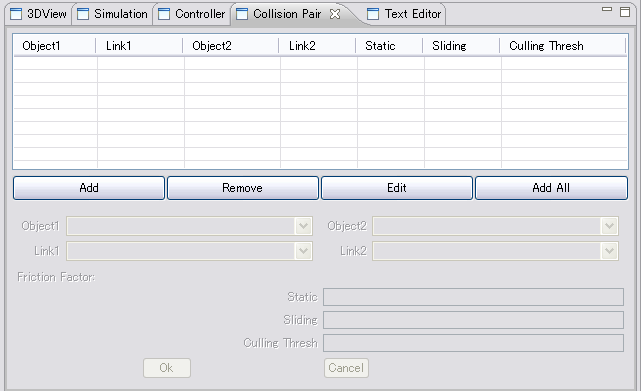
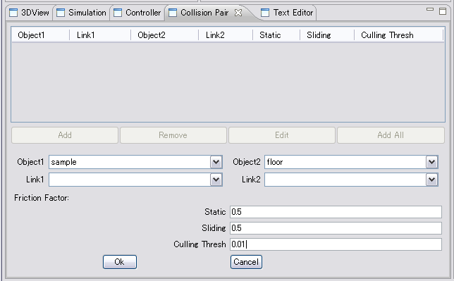
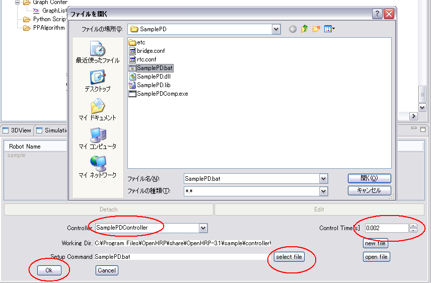
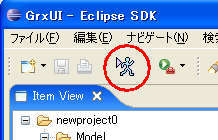

Project
Here we describe the building steps of a simulation project, by using GrxUI.
First, start GrxUI.
Preparation
If other projects are already read, select "New Project" from the GrxUI menu, or select "create Project" from a right-click for the project item of Item View, and create a new project.

Model
In this sample, we are going to create a simulation project of a walking robot.
Which means we have to have at least 2 models; the robot model and floor.
First, Right-click on "Model" in "Item View" panel, and select "Load".
Load "sample.wrl" and "floor.wrl", placed in "OpenHRP3/sample/model" folder.
Then, right-click on model "floor" and select "change into environment model";
so that floor can be specified as an environmental model.
Now we specify the initial posture of the robot.
For that, set the properties of the sample model using
Property View as you can see in Fig.1 . Table.1 shows the
input values more specifically.

Fig.1 : Property editing steps
Table.1 : Sample robot properties
| CHEST.angle | 0.0 |
| LARM_ELBOW.angle | -1.5708 |
| LARM_SHOULDER_P.angle | 0.174533 |
| LARM_SHOULDER_R.angle | -0.003490 |
| LARM_SHOULDER_Y.angle | 0.0 |
| LARM_WRIST_P.angle | 0.0 |
| LARM_WRIST_R.angle | 0.0 |
| LARM_WRIST_Y.angle | 0.0 |
| LLEG_ANKLE_P.angle | -0.0424675 |
| LLEG_ANKLE_R.angle | 0.0 |
| LLEG_HIP_P.angle | -0.0360373 |
| LLEG_HIP_R.angle | 0.0 |
| LLEG_HIP_Y.angle | 0.0 |
| LLEG_KNEE.angle | 0.0785047 |
| RARM_ELBOW.angle | -1.5708 |
| RARM_SHOULDER_P.angle | 0.174533 |
| RARM_SHOULDER_R.angle | -0.003490 |
| RARM_SHOULDER_Y.angle | 0.0 |
| RARM_WRIST_P.angle | 0.0 |
| RARM_WRIST_R.angle | 0.0 |
| RARM_WRIST_Y.angle | 0.0 |
| RLEG_ANKLE_P.angle | -0.0424675 |
| RLEG_ANKLE_R.angle | 0.0 |
| RLEG_HIP_P.angle | -0.0360373 |
| RLEG_HIP_R.angle | 0.0 |
| RLEG_HIP_Y.angle | 0.0 |
| RLEG_KNEE.angle | 0.0785047 |
| WAIST.rotation | 0.0 1.0 0.0 0.0 |
| WAIST.translation | 0.0 0.0 0.713 |
| WAIST_P.angle | 0.0 |
| WAIST_R.angle | 0.0 |
WorldState
Here we create "WorldState" and configure the parameters.
Right-click "WorldState" in the "Item View" panel, and select "create".

Fig.2 : WorldState
Select Simulation View. Set each parameters
as described in Table.2 .
Table.2 : Simulation Parameters
| Total Times[s] | 13.4 |
| Integration Step[s] | 0.0020 |
| Logging Step[s] | 0.0020 |
| Integration Method | RUNGE_KUTTA |
| Gravity[ms-2] | 9.8 |

Fig.3 : Simulation Parameters
Collision Pair
Here we are going to specify the collision check between floor and robot; (We call them "Collision pair").
First, select "Collision Pair View".

Fig.4 : Collision Pair View
Now Click "Add" button. Select "sample" as Object1, and "floor" as Object2, and then click "OK"
button.

Fig.5 : Addding Collision Pair
Controller
Now we configure the controller.
Select "Controller View".
Note:
Refer to Controller Building Guide for the creation method of a controller.
Here, how to specify the controller of the sample already created is explained.
Choose Sample from the list of robots by Controller View, and push the Edit button.

Fig.6 : Controller View
Specify controller parameters as described in Table.3 .
If "SamplePDController" is not available at there to select, please enter by your self.
Control Time is a time interval which performs a controller. Please set up the value more than the integration interval of a simulation.
As shown in a figure, please choose Working Dir and Setup Command using a file selection dialog, or as shown in Table 3, specify them using an environment variable.
Table.3 : Controller Parameters
| Controller | SamplePDController |
| Control Time[s] | 0.002 |
| Working Dir. | $(PROJECT_DIR)/../controller/SamplePD |
| Setup Command | SamplePD$(BIN_SFX) |

Fig.7 : Controller View
Simulation
Now we are going to start simulation process by executing the created controller-component.
For that, just click on "Start simulation" button in GrxUI, as shown in Fig.8 .

Fig.8 : Start simulation
Saving Project File
you can save the created project file, by selecting "Save Project" from
GrxUI menu.